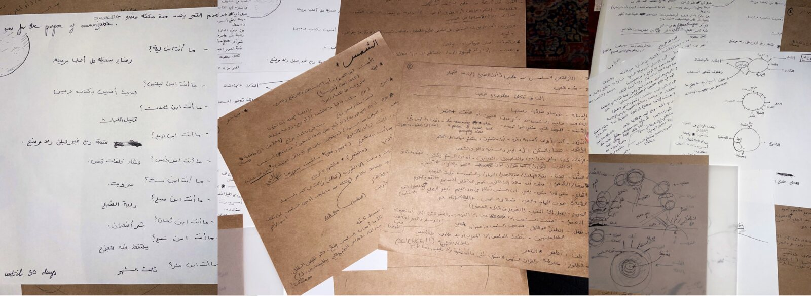
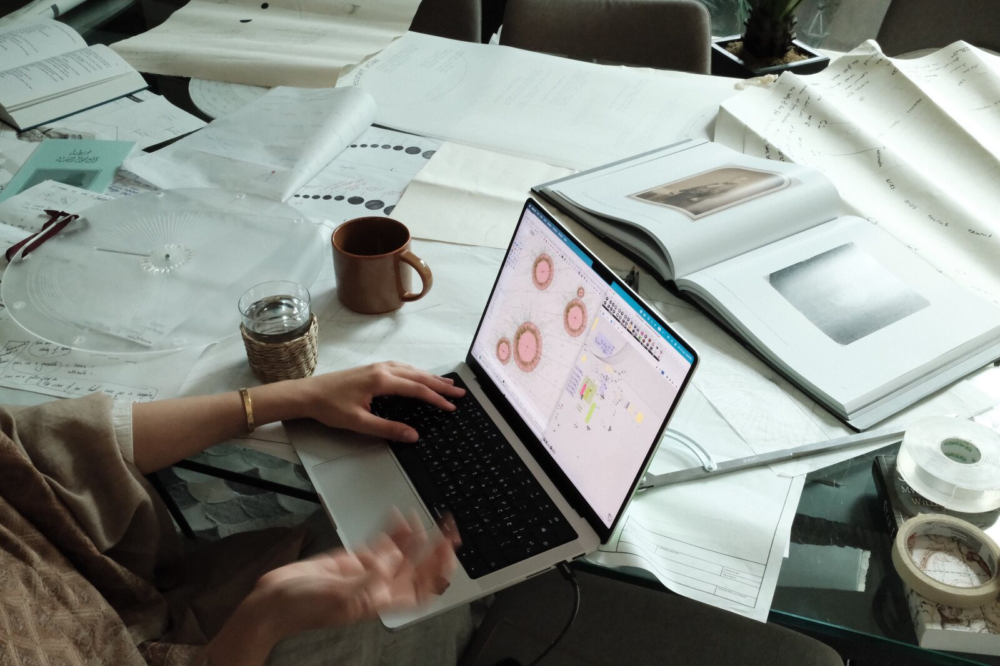
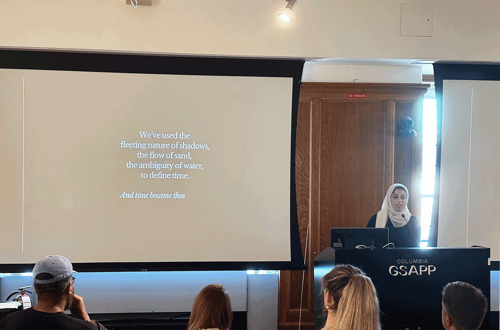

iv
Method
I
To uncover lost temporal realities, spatial frameworks, and environmental logics, it would be counterintuitive to rely solely on the tools and lenses of the present day. I would only fall into the same traps.
These frameworks are often illuminated by the sideways gleam of cultural production. Their traces, often subtle, often scattered, are found in language, poetry, art, tools, materials, and other artifacts of lived experience.
The Sapir-Whorf hypothesis - Linguistic Relativism - is the theory that language determines the way people think, and suggests that the language spoken will shape the way one sees the world. When language is perpetuated and built upon, so is that worldview the language operates within. In other words, the language you speak expands, limits, and generally orchestrates your thoughts and worldview.
Therefore, to understand how people in the past viewed the world, it would be useful to dive into rich, deep-rooted languages, to possibly reveal long-lost environmental logics that would explain the framework on which we built everything we know today. Or at least serve as a foil to expose the assumptions we have about how time and space are understood today.
Arabic is a valuable starting point here, because I speak Arabic, and classical Arabic poetry is how I learned and interpreted some of the sky.

For Names of the Sun, Houses of the Moon, Cloudspotter and other Resistant Atlas projects, the main resource is Ibn Qutaybah al-Dinawari’s Kitab al-Anwaa1 a dictionary of meteorological terms, including dozens of words for the sun, the moon, the stars, the wind, the rain, the clouds, and other environmental phenomena. These terms are listed alphabetically, and defined on an aesthetic/poetic basis. No real quantifiable or empirical, a.k.a. 'scientific' data regarding use, the time, the area, etc, is listed. No timestamps, heights, coordinates, orbit paths, or meteorology data are listed.

But assuming Sapir-Whorf's hypothesis, the language itself is the data. The Western divide between poetry and science is just that. Western. By operating as if the two are not separate, but two sides of the same coin, there is much to be uncovered.

NYC, 2024